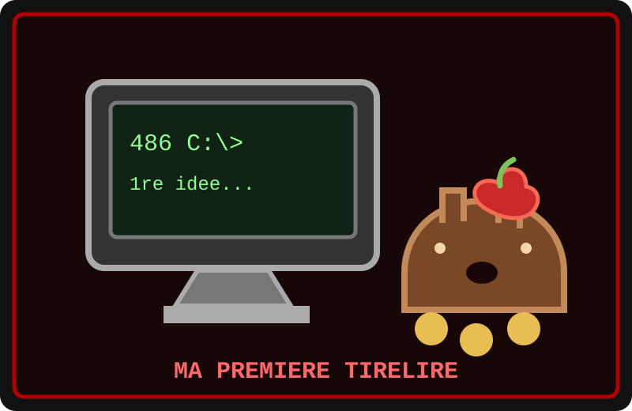

Je me souviens du jour où j’ai allumé mon premier ordinateur. Il a fait « beep-boop », puis son écran vert s’est illuminé. J’étais si content que j’en ai failli faire tomber ma pomme ! J’ai découvert les forums, les pages personnelles et des mots mystérieux comme « ping » et « modem ».
Mon ordinateur était un 486 avec 4 Mo de mémoire vive. Le modem poussait un cri de dinosaure à chaque connexion et les images mettaient une éternité à apparaître. Pendant l’attente, j’ai commencé à prendre des notes : quels sites étaient utiles, quels objets valaient la peine d’être échangés et comment économiser mes pièces. C’était mon premier carnet d’entrepreneur.
Ma première idée de business
- Je proposais d’échanger des conseils contre des pommes bien mûres.
- Je gardais mes pièces dans une tirelire en forme de souche.
- Je comparais toujours les offres avant de dire oui : une bonne négociation, ça se prépare !
Un soir, j’ai oublié de débrancher le modem. Son concert a réveillé tout le terrier ! Pour me faire pardonner, j’ai créé une petite page personnelle avec un compteur de visiteurs et présenté mon projet de boutique de pommes. Trois visiteurs sont passés : pour moi, c’était déjà un marché à conquérir.
Depuis, je note mes idées, je protège mes économies et je n’investis jamais toutes mes pièces dans le même panier, même s’il contient de délicieuses pommes.